Le Festival 2027
Cette page se mettra à jour régulièrement pour vous donner les informations utiles sur les activités proposées pour l'édition 2027.
Les stages 2027
Des ateliers et des stages d’instruments graves sont organisés pendant le festival Mardi Graves le week-end du 6 et 7 février 2027 au Domaine du Terral à Saint-Jean-de-Védas, avec la participation de professeurs musiciens de premier plan.
Pour en savoir plus n’hésitez pas à contacter :
- pour la contrebasse et l'atelier des jeunes contrebassistes : Jean Ané
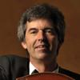
- pour le tuba et l'euphonium : Harumi Baba
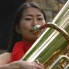
Le stage de contrebasse
Atelier, cours, masterclass avec Thierry Barbé, Tom Gélineaud, Cédric Carlier, Bernard Cazauran, Nicolas Crosse, Florentin Ginot et Théotime Voisin.
Le stage de Tuba et d'Euphonium
Atelier, cours, masterclass avec Harumi Baba, Tancrède Cymerman, Yves Lair et Guillaume Dionnet pour le tuba, Florent Dath pour l’euphonium.
L'atelier des (jeunes) contrebassistes
Stage de jeunes contrebassistes dirigé par Émilie Postel-Vinay, Marjorie Pagès et Jean Ané. Ce stage comporte 3 séances
- samedi matin de 10h à 12h ,
- samedi après-midi de 14h à 16h,
- dimanche matin de 10h à 12h
Puis participation au concert de fin du Festival le dimanche à 16h.
Les artistes invités
Matthieu Ané, piano, composition, contrebasse
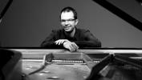
Matthieu ANÉ, musicien pluridisciplinaire qui a la chance de pouvoir rassembler des activités d’interprète (pianiste et contrebassiste), chef d’orchestre et plus récemment, compositeur. Il commence le piano au CNR de Montpellier où il sera récompensé du Diplôme d’Études Musicales en 1998. Puis il étudie ensuite au Conservatoire Supérieur de Genève, à la Hochschule Der Kunste de Berlin et enfin, obtient un prix de perfectionnement au CNR de Rueil – Malmaison ainsi qu’un 2e prix au Concours International de Piano de Brest. Ses productions musicales sont nombreuses et variées (répertoire soliste, musique de chambre, créations contemporaines et théâtre musical). Il accompagne régulièrement le répertoire de contrebasse lors de festivals, notamment Mardi Graves et les Rencontres de Contrebasse en Roussillon. C’est la passion du répertoire symphonique qui l’amène vers l’apprentissage de la contrebasse (obtention du DEM) et un peu plus tard à la pratique de la direction d’orchestre. Titulaire du DEM de direction d’orchestre dans la classe de Nicolas Brochot, il participe également à des masterclasses de direction avec les chefs Alexandre Myrat et Bernard Haitink.
Il est co-fondateur du stage d’orchestre symphonique des Essarts (près de Rouen) et fondateur de l’orchestre Inuendo avec lequel il dirige notamment le requiem de Mozart, les 7 dernières paroles du Christ de J.Haydn , la symphonie classique de Prokofiev et le 4e concerto pour piano de Beethoven et d’autres grandes œuvres du répertoire. Titulaire du Certificat d’Aptitude de piano, Matthieu enseigne actuellement la musique de chambre et dirige différents orchestres dans les conservatoires de Bourg-la reine (92) et Châtenay-Malabry (92) après avoir enseigné le piano au CRD de Cachan (94) et CRI de Courbevoie (92). En 2020, il se lance dans la composition de pièces de musique de chambre et ensembles instrumentaux et compte une cinquantaine d’œuvres à son catalogue. En 2023 l’opéra de Darmstadt lui a fait une commande pour un trio dans le cadre de sa saison de musique de chambre. La pièce intitulée Fata Morgana Il a été créée en Mai 2024. Actuellement, il est compositeur en résidence au CMA 10 de la ville de Paris et l’on peut trouver certaines de ses œuvres dédiées chez partitions-pour.art.
Thierry Barbé, contrebasse
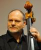
Thierry Barbé est contrebasse solo de l’Orchestre National de l’Opéra de Paris (membre depuis 1983),
professeur au CNSMDP (1999) et au CRR de St-Maur (1997).
Il a enseigné la contrebasse depuis 1982 à la ville de Paris. Né à Metz, après un baccalauréat scientifique, des études de piano et contrebasse, il entre au CNSMDP où il obtient ses premiers prix de contrebasse (Rollez, 1982), Analyse musicale (Castérède, 1984), 1er accessit d’Harmonie (Raynaud, 1985), histoire de la musique (Sappey), et d’autres cycles de contrepoint (Henry), musique electro-acoustique à Boulogne (Zbar), direction d’orchestre à Rueil (Devos), son CA, Certificat d’Aptitude de professeur de contrebasse ( 1992)…
Il a donné des recitals avec piano et des master classes dans plus de 20 pays. Il met en avant une contrebasse lyrique et expressive dans tous les styles, du baroque au contemporain (CD « Nomade » en 1998, Mikroncerto de contrebasse et orchestre de Dubugnon au festival de Capbreton…).
Il est passioné par toutes les techniques de la contrebasse dans le monde, présentateur à l’association Médecines des Arts. Il est membre de l’ESTA, president de l’ABCDF (Association de contrebassistes de France, membre du bureau de l’ISB (International Society of Bassists), et a organisé avec l’ABCDF et Riccardo Del Fra une convention exceptionnelle de la contrebasse au CNSMDP (Bass’2008) avec plus de 80 récitals et conférences sur cet instrument. Il a ainsi initié un processus d’échanges en Europe (Bass’2010 à Berlin, Bass’2012 à Copenhague…).
Cédric Carlier, contrebasse
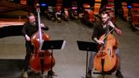
Cédric Carlier étudie la contrebasse au CNSM de Lyon dans la classe de J.P.Céléa où il passe son DNESM en 1997. Il entre à l’orchestre de Paris en 1999, puis contrebasse solo de l’opéra de Lyon en 2007. Il est depuis appelé comme contrebasse solo dans de nombreux orchestres en France et à l’étranger, et se produit régulièrement en musique de chambre et récitals.
Il est, depuis 2010 contrebassiste du Modern Lemanic Ensemble.
En 2012 il est nommé professeur au CNSMD de Lyon, il donne régulièrement des masterclasses en France et à l’étranger et participe à plusieurs académies internationales de musique.
Invité traditionnel et soutien du Festival 2025 il participe à divers événements, concert et masterclasses !
Bernard Cazauran, contrebasse
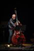
À l’orée d’une belle carrière
Bernard Cazauran a été Membre de l’Orchestre de Paris dès sa création en 1967 et contrebasse solo de 1977 à 2012. Il obtient le Premier prix de contrebasse au Conservatoire National Supérieur de Musique et de Danse de Paris en 1966. Il commence sa carrière au sein des Concerts Lamoureux et participe à la dernière saison de la Société des Concerts du Conservatoire. Lauréat du premier Concours international de Genève en 1969, il reçoit la Médaille d’argent au deuxième Concours en 1973 et le deuxième prix au Concours international Valentino Bucchi à Rome en 1978.
Parcours musical
Bernard Cazauran se produit en musique de chambre avec Daniel Barenboïm et les musiciens de l’Orchestre de Paris, avec l’Ensemble à vents Maurice Bourgue et le Kammer Ensemble de Paris. Il fait partie du Quartette Carrasco « H » depuis 1990 et ainsi que du Sirba Octet depuis sa fondation en 2003. En 1991, il participe à la création du Diptyque « Les Citations » d’Henri Dutilleux. Bernard Cazauran a enseigné au Conservatoire National Supérieur de Musique et de Danse de Lyon de 1997 à 2012. Il anime régulièrement des masterclasses dans le monde entier. Il et participe à Mardi Graves depuis sa création. Il était le premier invité et est resté, depuis, un pilier fondateur !
Tancrède Cymerman, Tuba
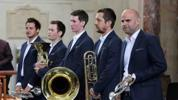
Tancrède débute le tuba très jeune au CRD de Cambrai, puis au CNSMD de Paris en 2010 et en sort avec une « Mention très bien à l’unanimité » en 2015. Parallèlement à ses études, il se distingue lors de nombreux concours : lauréat du concours national de Tours (2009-2011), lauréat des concours internationaux de Porcia (Italie-2012) et Jéju (Corée du Sud-2014). Il se produit en soliste avec orchestre symphonique ou régulièrement avec orchestre d’harmonie et récital avec piano.
Il est également invité à rejoindre les orchestres symphoniques français les plus prestigieux : Ensemble Intercontemporain, Ensemble Les Dissonances, Orchestre de Paris, Orchestre Philharmonique de Radio France, Orchestre National de France… Il se produit aussi à l’étranger avec l’Orchestre de Macao (Chine). Il investit dans la musique de son temps, il a travaillé à la création d’une pièce pour tuba solo et électronique avec l’IRCAM (Institut de Recherche et Coordination Acoustique/Musique). Chambriste passionné, il est membre fondateur du Local Brass Quintet, quintette de cuivres avec lequel il se produit dans les festivals et événements les plus prestigieux. Il passe régulièrement sur les ondes de France Musique et de Radio classique et représente l’école française des cuivres à l’étranger (tournées en Chine, Japon). Tancrède Cymerman est tuba solo de l’Opéra Orchestre National de Montpellier et professeur au CNSMD de Paris, à l’IESM d’Aix en Provence et au CRR de Montpellier.
Jean-Marc Fouché, composition
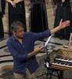
Jean Marc Fouché a toujours été musicalement attiré par des genres très variés. Pianiste de jazz, arrangeur et également contrebassiste, c’est probablement sa curiosité qui l’a baladé des grands orchestres symphoniques (tels que l’Orchestre de Montpellier où il a occupé le poste de contrebasse second soliste pendant 15 ans, l’Orchestre de Paris, le Capitole de Toulouse ou l’Orchestre National de France), jusqu’aux clubs de jazz, aux festivals de Tango Argentin ou encore jusqu’à la musique cubaine, brésilienne, d’Europe centrale, sans jamais perdre de vue les liens étroits et la complémentarité existant entre ces univers pourtant en apparence si éloignés les uns des autres.
On retrouve donc dans son travail un fond, une ossature issue de son amour pour la musique classique, et parfois parsemée d’inspirations puisées dans d’autres genres. Mais il n’y a rien de systématique dans son écriture. Poèmes symphoniques descriptifs, d’autres plutôt impressionnistes ou la première symphonie «Tragique» beaucoup plus lourde et dramatique côtoient des pièces de musique de chambre plus légères et divertissantes, commandées par des ensembles aux instrumentations inattendues. Et c’est justement dans ces recherches de couleurs sonores qu’il trouve l’un de ses principaux intérêts à écrire ses notes.
Tom Gélineaud, contrebasse
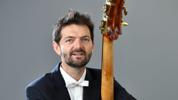
Tom Gélineaud commence par l’étude du piano, puis de la contrebasse. Après le conservatoire de Bordeaux dans la classe de Jean-Paul Macé, il intègre en 2000 le CNSMD de Lyon dans la classe de Bernard Cazauran et François Montmayeur. Il obtient en 2004 le DNESM avec mention « très bien à l’unanimité » et intègre la même année l’Orchestre National d’Île de France. En 2010, il rejoint les rangs de l’Orchestre National Montpellier Occitanie et occupe depuis 2022 le poste de contrebasse solo.
Claude Henry Joubert, composition
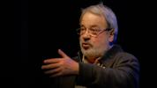
Altiste, compositeur et chef d’orchestre, Claude-Henry JOUBERT est lauréat du Conservatoire National Supérieur de Musique et de Danse de Paris (solfège, alto, histoire de la Musique, musique de chambre, contrepoint, esthétique musicale, fugue, harmonie) ; il est également docteur ès de l’Université de Paris IV-Sorbonne. Il fut directeur du conservatoire d’Orléans de 1972 à 1987 puis, de 1987 à 1994, directeur de l’institut de Pédagogie Musicale et Chorégraphique (IPMC, Paris, Cité de la Musique de la Villette), et directeur de « Marsyas », revue trimestrielle de pédagogie musicale et chorégraphique. Chargé de formations pédagogiques en France, Suisse, Portugal, Espagne, Italie, et Turquie, il est désormais professeur d’harmonie et de musique de chambre à l’Ecole Nationale de Musique et de Danse d’Aulnay-sous-Bois ; il se consacre, d’autre part, à l’écriture musicale et littéraire.
Bernard Langlois, hautbois, composition
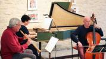
Après des études de saxophone et d’écriture Bernard Langlois se consacre au Hautbois et poursuit sa formation auprès de Paul Taillefer et Jacques Chambon. Titulaire du Certificat d’Aptitude aux fonctions de Professeur de Hautbois, il crée une classe de cet instrumentdans les conservatoires d’Ales, de Béziers et de Narbonne puis enseigne au CRR de Perpignan.
Premier hautbois de l’Orchestre Lyrique du Théâtre de Nîmes, puis de l’Orchestre de Perpignan C atalogne, il aparticipé à de nombreux concerts au sein des Orchestres de Montpellier et d’Avignon, avec les Solistes deMoscou, l’Orchestre National de Chambrede Toulouse, l’Orchestre de chambre d’Auvergne, la Camerata deVersailles, J.F. Paillard, B. Thomas, la Camerata de France, l’ensemble Contrepoint…
Bernard Langlois se produit également dans divers ensembles de musique de chambre. Ila également été membre de l’ensemble de musique contemporaine « Solars Vortices » àBarcelone. A la recherche de plus d’authenticité dans l’interprétation de la musique« ancienne », il s’initie dans les années 2000 à la pratique du hautbois baroque grâce auxconseils éclairés de Christian Moreaux. Il participe depuis aux concerts de l’Ensemble Arianna, de l’Ensemble Vocal de Montpellier, de l’ensemble Vocal Claire Garrone et de l’Orchestre baroque de Perpignan.
Bernard Langlois est aussi arrangeur et compositeur, privilégiant les instruments à vent et les percussions (musique de chambre, ensemble de cuivres, pièces à caractère pédagogique, conte musical….
Il a également dirigé l’Orchestre d’Harmonie de la Ville de Perpignan ainsi que le Brass Band et la Bande de Hautbois du CRR de Perpignan.
Nicolas Rivenq, baryton
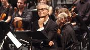
Licencié ès Lettres et ancien élève de l’École Normale Supérieure des Arts Décoratifs, le baryton Nicolas Rivenq a fait ses études de chant au Conservatoire National de Musique de la ville d’Orléans, à l’École d’Art Lyrique de l’Opéra de Paris et aux Etats-Unis à l’Université d’Indiana. Remarqué par Yehudi Menuhin, il fait ses débuts aux festivals d’Edinburgh et de Gstaad sous sa direction, puis débute une longue collaboration avec W.Christie, R. Jacobs et J.C.Malgoire en prenant part à plus d’une soixantaine de leurs productions, particulièrement à L’Atelier Lyrique de Tourcoing et la Grande Écurie et la Chambre du Roy. G.Strehler le choisit pour ce qui sera sa dernière production d’opéra (Cosi Fan Tutte) pour l’inauguration du Teatro d’Europa à Milan. Il participe aux concerts inauguraux de la réouverture de La Fenice sous la direction de R.Muti ainsi qu’à l’ouverture de la Cité de la Musique à Paris sous la direction de P.Boulez. Jonglant du Baroque au Contemporain, il couvre un vaste répertoire qui l’a conduit à travers le monde sous la direction des chefs les plus prestigieux. Nicolas Rivenq figure dans plus d’une centaine d’enregistrements CD ou DVD. Il reçoit le premier prix du Concours G.B.Viotti à Vercelli en 1990.
Brice Soniano, contrebasse
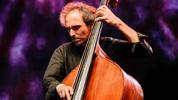
Brice Soniano né à Narbonne commence la contrebasse avec Jean Ané puis poursuit au Conservatoire Royal de La Haye aux Pays-Bas. Il continue ses études auprès d’une population de pygmées BAKA dans la forêt équatoriale camerounaise. A son retour il parcourt l’Europe avec des ensembles de musique contemporaine, de jazz, de musique improvisée et de musiques du monde.
Il est invité en tant que soliste avec l’Orchestre National de Montpellier pour la création de l’opéra Jetzt du compositeur Mathis Nitschke (2012) et se retrouve sur des scènes prestigieuses pour jouer avec des musiciens de légende comme Gonzalo Rubalcaba, Philippe Catherine, Ernst Reijseger, Michael Moore, Charles Gayle…
En 2023 la sortie de son disque pour contrebasse seule ‘Adagio Assai‘ sur le label d’ASTROPI à l’occasion du festival Mardi Graves à Montpellier a été remarquée.
Olivier Thiéry, contrebasse
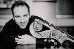
Olivier Thiery reçoit son premier cours de contrebasse à l’âge de 15 ans au Conservatoire de Cannes. Il poursuit ses études supérieures au CNR de Toulon, puis à la Folkwang Hochschule für Muzik de Essen en Allemagne.
Passionné d’orchestre, Olivier a été membre de l’Orchestre français des jeunes, de l’Orchestre des jeunes Gustav Mahler. Il est actuellement membre de l’Orchestre royal du Concertgebouw d’Amsterdam. Invité régulier du Mahler Chamber Orchestra, Olivier Thiery participe à de nombreux festivals en Europe en tant que chambriste et soliste : à Salon-de-Provence, festival Musique à l’Emperi ; à Kronberg, au. Chamber Music Connects the World 2010 ; à Nice, festival C’est pas classique…
Il enseigne depuis octobre 2013 au Conservatoire d’Amsterdam et à la Folkwang Hochschule für Muzik de Essen.
Théotime Voisin, contrebasse
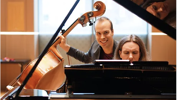
Né en 1992 à Montpellier, Théotime Voisin s’est d’abord intéressé à la contrebasse grâce à Jean Ané, contrebassiste solo à l’Orchestre national de Montpellier.
À quinze ans, au C.N.S.M de Lyon, il étudie auprès de Bernard Cazauran, contrebassiste solo à l’Orchestre de Paris, et en sort avec la plus grande distinction. Il intègre à 14 ans l’Orchestre des Jeunes de l’Union Européenne. A la Haute Ecole de Musique de Genève, il obtient un Master de soliste instrumental et reçoit le Prix Henry Brolliet. Il termine ses études en 2016 à la Musikhochschule de Fribourg avec un diplôme de Soliste, ainsi que le Prix Spehl. Il est lauréat de nombreux concours internationaux :
- Concours International Valentino Bucchi de Rome 2008,
- Concours International du Festival Musical d’Automne des Jeunes Interprètes 2010,
- Prix spécial d’interprétation au concours Sperger 2010,
- International Society of Bassists Solo Competition – San Francisco 2011
- Bass 2012 International Solo Competition – Copenhague.
Il a participé à de nombreuses master-classes auprès de contrebassistes de renom tels que Jean-Paul Céléa, Jurek Dybal, Giuseppe Ettore et Duncan McTier.
Son intérêt pour la musique contemporaine l’a amené à créer une œuvre pour la Radio Suisse Romande en octobre 2010 et à intégrer le Lemanic Modern Ensemble à Genève.
En octobre 2011, il organise une tournée de collecte de fonds en Équateur au profit des enfants atteints de cancer et donne des master-classes dans plusieurs conservatoires, collaborant avec le chanteur populaire équatorien Hernan Sotomayor.
Il a enregistré en 2013 un CD dédié à la musique française sur le label italien NBB Records, Contre-jour, Musica francese al Contrabbasso.
Lors de la saison 2013-14, il est contrebasse solo invitée de l’Orchestre Suisse Romande à Genève. En 2014, il rejoint la Lucerne Festival Academy.
Il obtient en 2015 le poste de solo de l’Orchestre National du Capitole de Toulouse, et est depuis 2016 contrebasse solo de l’Orchestre Royal du Concertgebouw d’Amsterdam. Il est régulièrement invité à se produire en soliste avec orchestre, ou en récital. Il se produit au sein d’ensembles de musique de chambre réputés en France et à l’étranger, à plusieurs reprises, il est invité à participer à l’International Academy Switzerland sous la direction de Robert Mann (Julliard Quartet), Nobuko Imai, Kazuki Yamada et Seiji Ozawa.
Au cours de l’année 2021, pour fêter les 200 ans de Giovanni Bottesini, il décide d’enregistrer en vidéo son œuvre complète pour contrebasse et piano avec le pianiste Maurice van Schoonhoven.
Depuis septembre 2020, il enseigne au Conservatoire royal de La Haye, aux Pays-Bas.
Il joue une contrebasse du luthier français Jean Auray.